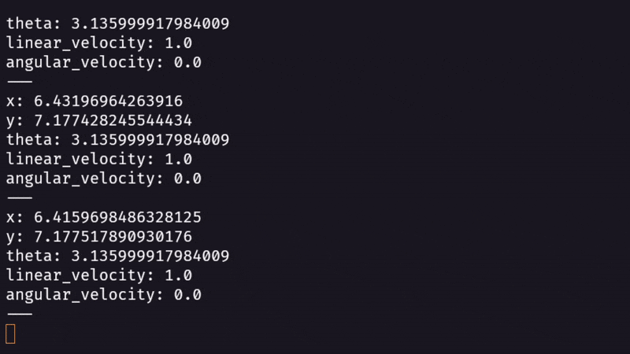
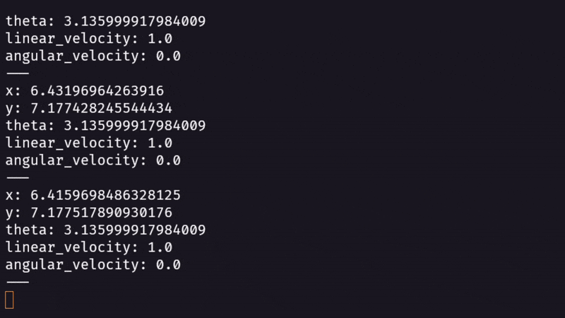
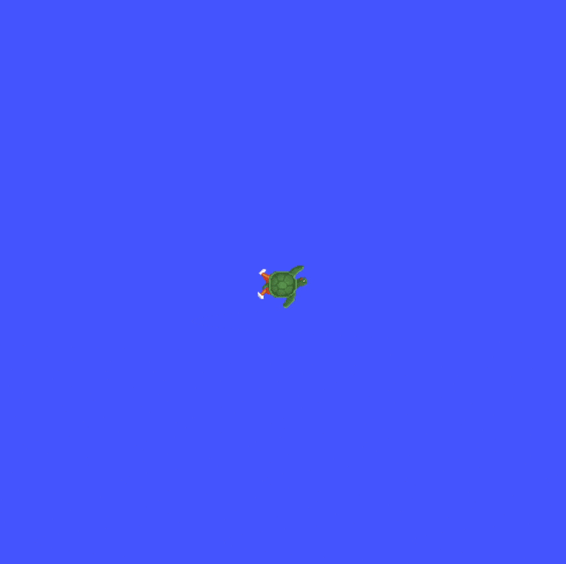
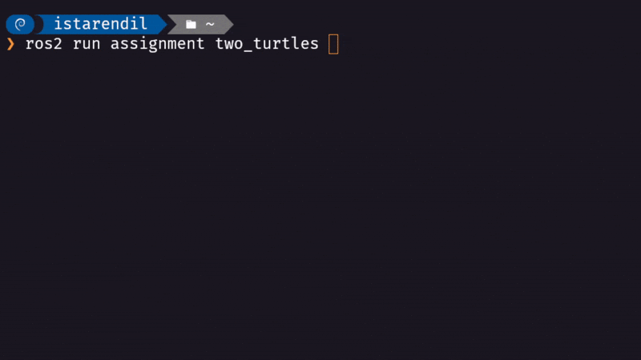
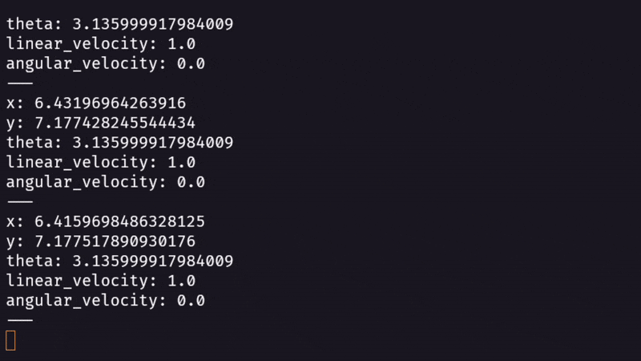

Assignments for the course “Robot Programming with ROS - 2025”, taught by Prof. Carmine Tommaso Recchiuto.
This repository contains the solutions for two assignments implemented in ROS2 using Python and the Turtlesim simulator.
For each assignment, two GIFs are included to visually demonstrate the results: - One shows the GUI with the turtle(s) moving. - The other shows the terminal execution.
The goal of this assignment is to implement a UI node with the following features: - Spawn a new turtle in the environment: turtle2. - Implement a simple textual interface to retrieve user commands (input in Python).
The user can: - Select which turtle to control (turtle1 or turtle2). - Specify the velocity (linear, angular, or both). - The command is sent for 1 second, after which the robot stops.
The user can then input a new command. - Publish a custom message containing the string "turtle2" and the position of turtle2.
 
The second assignment extends the first one and must be done using ROS2.
The tasks are: - Call the service kill to remove turtle1 and spawn a new turtle. - Create a publisher and a subscriber for the new turtle (cmd_vel and pose topics). - Check message types and add the needed dependencies. - Add both a publisher and a subscriber node. - Publish a certain velocity inside the callback. - Create a launch file to start turtlesim and the controller.

The src/ folder contains two ROS2 packages:
src/
├── assignment/ # Main ROS2 package
│ ├── two_turtles.py # Assignment 1: UI and textual interface node to control turtle1 and turtle2
│ ├── trajectory_turtle.py # Assignment 2: node to generate trajectories for the turtle
│ ├── launch/
│ │ └── launch_assignment.py # Assignment 2: launch file for turtlesim and the controller
│ ├── package.xml # ROS2 package manifest
│ ├── setup.py / setup.cfg # Build and installation configuration
│
├── assignment_msg/ # Custom ROS2 message package
│ ├── msg/TurtleInfo.msg # Assignment 1: custom message with turtle info
│ ├── CMakeLists.txt # Build configuration for messages
│ └── package.xml # Message package manifest
│This structure separates the logic nodes (assignment/) from the custom message definitions (assignment_msg/), following standard ROS2 practices.
Carlos Alberto Sánchez Delgado Student at University of Genoa (UniGe) – IIT, Doctoral Program in Robotics and Intelligent Machines (DRIM).